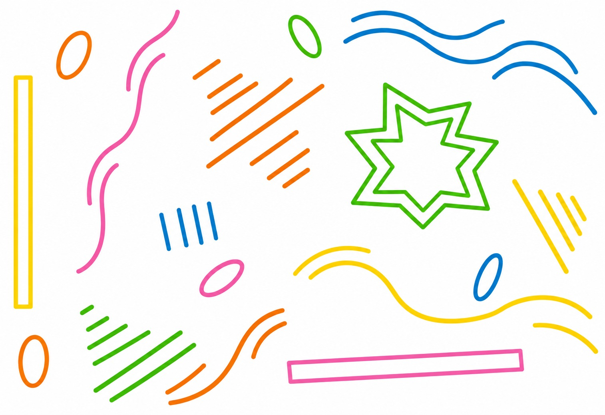

Corazón universitario
El eco de voces y pasos en el campus
Estar en el centro de la U es escuchar un montón de cosas al tiempo. Se oyen las risas de los que están parchados, los pasos rápidos de los que van tarde a clase y ese murmullo constante de gente hablando por todos lados. Es un ruido lleno de energía donde se cruzan las charlas de pasillo con la música que suena de fondo, creando ese ambiente único que te hace sentir que la universidad está viva.